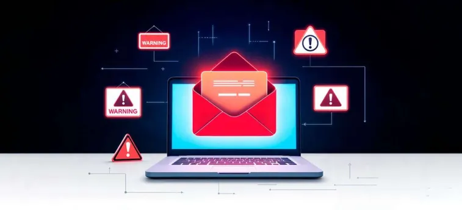
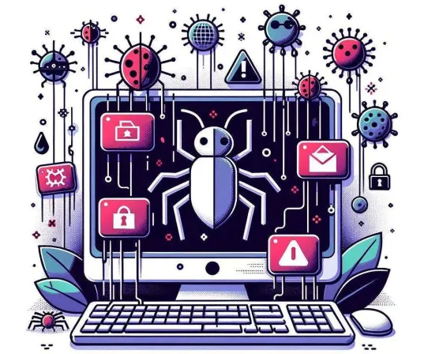
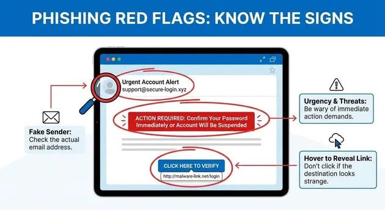

| La ingeniería social es una técnica utilizada por los ciberdelincuentes para manipular y engañar a las personas con el objetivo de obtener información personal, contraseñas, datos bancarios o acceso a sus cuentas. Generalmente, se aprovecha de la confianza, el miedo o la curiosidad de las víctimas para conseguir que realicen acciones sin darse cuenta del peligro. Por otro lado, el Phishing es uno de los engaños más comunes dentro de la ingeniería social. Consiste en enviar mensajes, correos electrónicos o crear páginas web falsas que imitan a empresas o instituciones legítimas para robar información. Su detección consiste en identificar señales sospechosas, como enlaces desconocidos, errores ortográficos, remitentes extraños o mensajes que solicitan información confidencial. Reconocer estas señales permite prevenir fraudes y proteger nuestra privacidad digital. |
|---|
¿Qué es la ingenieria social? |
|
|---|---|
| La ingeniería social es un conjunto de técnicas de manipulación psicológica utilizadas por los ciberdelincuentes para engañar a las personas y conseguir información privada o confidencial, como contraseñas, datos personales, números de tarjetas bancarias y accesos a cuentas. Este tipo de engaño se aprovecha de la confianza, el miedo, la curiosidad y el desconocimiento de las víctimas para convencerlas de realizar determinadas acciones sin que sospechen del peligro. Generalmente, los atacantes se hacen pasar por personas conocidas, trabajadores de empresas, instituciones bancarias o servicios técnicos para aparentar ser confiables. Estas técnicas pueden presentarse mediante llamadas telefónicas, mensajes de texto, correos electrónicos y redes sociales. La ingeniería social representa un riesgo importante para la seguridad digital, porque no necesita atacar directamente un sistema informático, sino que busca aprovechar los errores humanos. Por esta razón, es fundamental aprender a reconocer los engaños, proteger nuestra información y verificar siempre la identidad de quienes solicitan nuestros datos. | |
Sus objetivos principales son |
|
|---|---|
|
¿Qué es la Phising? |
|
|---|---|
|
El Phishing es un tipo de ciberataque que consiste en engañar a las personas mediante correos electrónicos, mensajes de texto, llamadas o páginas web falsas que imitan a empresas, bancos o instituciones conocidas. Su principal objetivo es robar información personal y confidencial, como nombres de usuario, contraseñas, datos bancarios y accesos a cuentas. Los ciberdelincuentes utilizan mensajes que parecen legítimos para generar confianza, preocupación o urgencia en las víctimas, haciéndoles creer que deben actualizar sus datos, verificar una cuenta o solucionar un supuesto problema. Muchas veces incluyen enlaces que dirigen a sitios web falsos diseñados para recopilar información. El Phishing es una de las amenazas más frecuentes en Internet y puede provocar pérdidas económicas, robo de identidad y acceso no autorizado a información privada. Por eso, es importante revisar los remitentes, desconfiar de enlaces sospechosos y nunca compartir datos confidenciales en páginas desconocidas. |
 |
Caracteristicas principales |
|
|---|---|
|
 |
| TIPO | DESCRIPCION |
|---|---|
| Phishing | Se utilizan correos electrónicos falsos que imitan a instituciones o empresas conocidas. |
| Smishing | Utiliza mensajes de texto SMS para engañar a los usuarios y conseguir información privada. |
| Vishing | Consiste en realizar llamadas telefónicas haciéndose pasar por representantes de empresas o instituciones. |
| Baiting | Consiste en utilizar falsas recompensas, regalos u ofertas para despertar el interés de las personas. |
| Pretexting | El delincuente inventa una identidad o situación para obtener información mediante engaños. |
| Spear Phishing | Es un ataque personalizado dirigido a una persona o grupo específico utilizando información sobre sus intereses o actividades. |
¿Cómo detectar un intento de Phishing? |
|
|---|---|
|
 |
Ejemplo de un mensaje fraudulento (Phising) |
| Asunto: ¡Tu cuenta será suspendida! Estimado usuario: Hemos detectado un problema con tu cuenta. Debes verificar tus datos inmediatamente para evitar su bloqueo Verifica tu cuenta ahora |
|---|
Más ejemplos de mensajes fraudulentos |
| Video uno |
| Video dos |
| Video tres |
| Volver al Índice Principal |
|---|